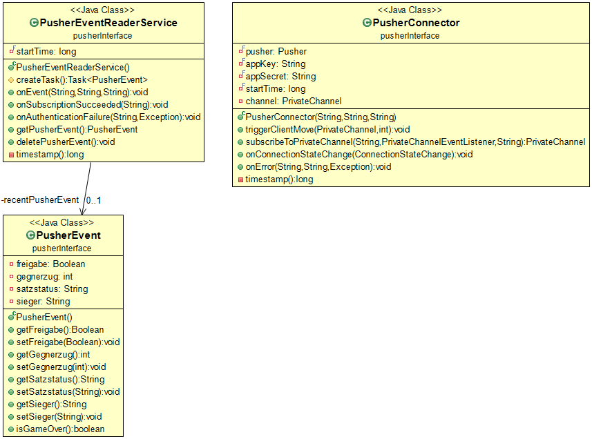

<body>
Dieses Paket enthält die Java-Klassen zur Kommunikation mit dem Server über die Pusher-Schnittstelle.

<br>
	<figure>
		
		<figcaption>Klassenstruktur des Paketes</figcaption>
	</figure>

	<p>weiter schreiben-----</p>
</body>